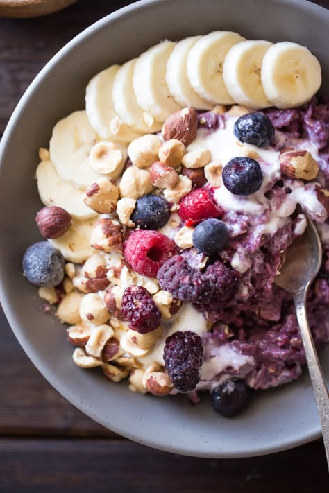
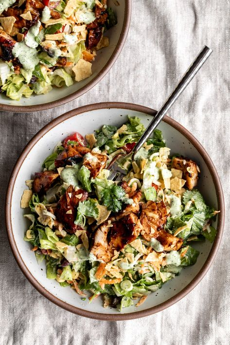
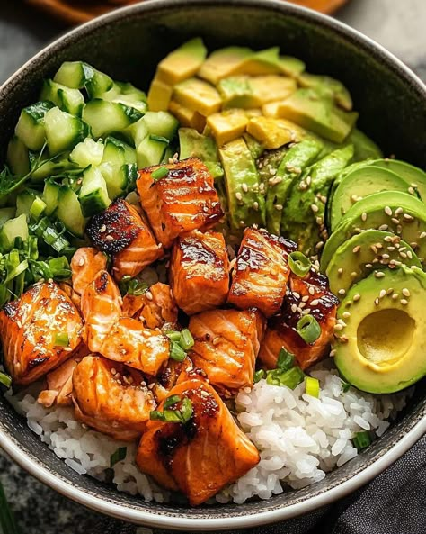
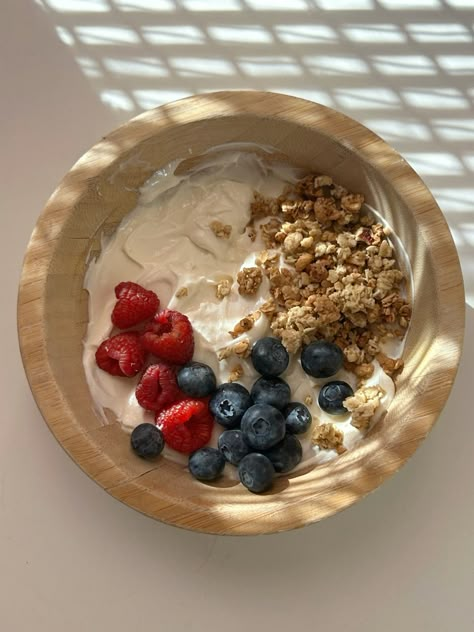
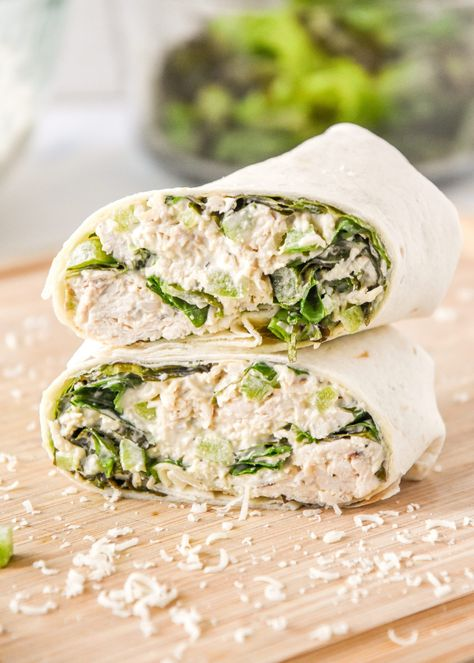
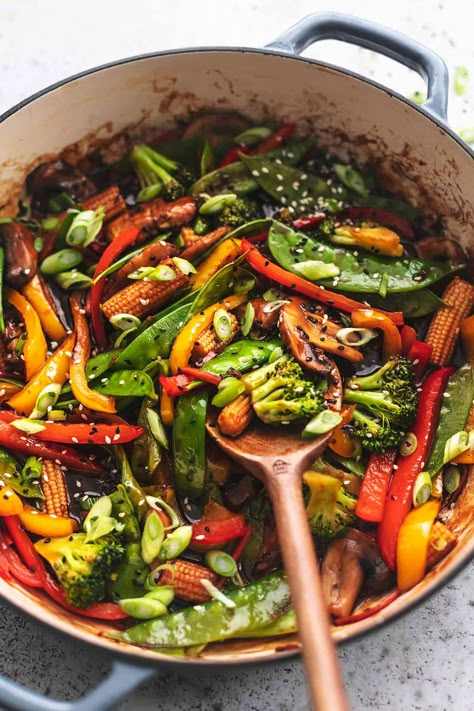

These foods dont just look appealing, they are appealing. Meal Prep Made Easy provides quick, fulfilling meal plans with grocery lists to make your life easier.
Meal prepping not only saves you time during the week but also helps you stay on track with your fitness and health goals. Having pre-portioned, healthy meals ready to go reduces the temptation of fast food or unhealthy snacks.
Our meal plans are designed for all types of lifestyles. Whether you are on a vegetarian, gluten-free, or high-protein diet, we've got you covered. You can customize your meals to fit your unique preferences while still keeping things easy and delicious.
Check out a sample of what our weekly meal plan looks like daily!
| Day | Breakfast Inspo | Lunch Inspo | Dinner Inspo |
|---|---|---|---|
| Monday |  |  |  |
| Tuesday |  |  |  |
Have questions? Visit our website for more information!